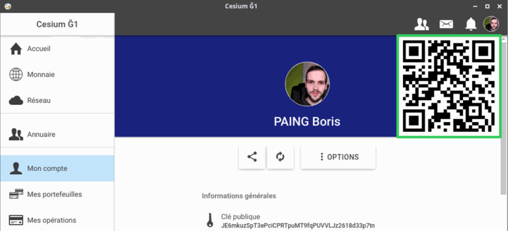

Pour rendre vos échanges plus rapides, plu et sécurisé lorsque vous rencontrez des personnes physiquement, vous pouvez imprimer votre QR code.
Un QR code peut avoir deux applications :
Les gens qui achètent vos biens ou services pourront alors scanner le QR avec avec leur smartphone, directement depuis l'application Cesium, et facilement vous faire un virement.
Pour imprimer votre QR code, rendez-vous dans l'onglet "Mon compte"
Cliquez sur votre QR code afin de l'agrandir.

Faites une capture d'écran de la fenêtre.
Rognez la capture d'écran pour ne garder que votre QR code et créer votre badge ou votre affiche.
Des logiciels comme The GIMP ou LibreOffice Writer vous permettent de réaliser ce genre d'opération.